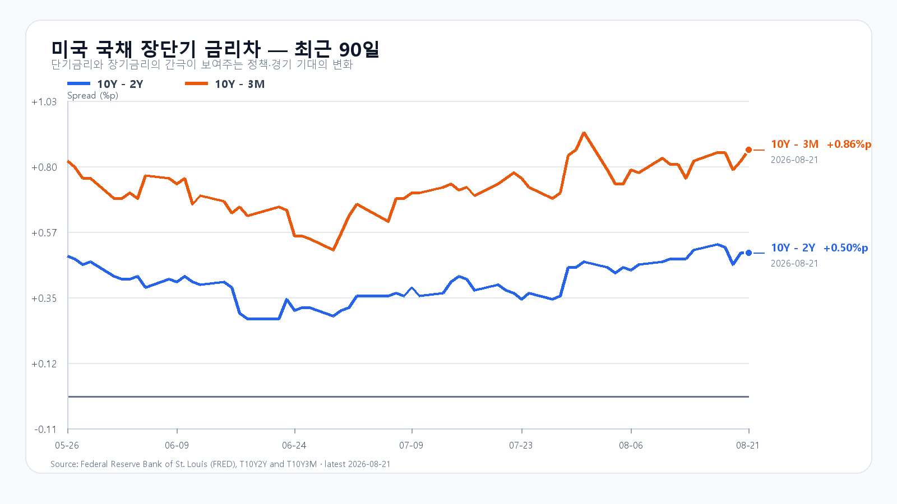

오늘의 한 문장
메모리값 상승은 국내 메모리주의 실적에는 힘이지만 AI 서버 가격을 끌어올리면 최종 수요에는 부담입니다. KOSPI 6,800선과 삼성전자 NXT 낙폭, 외국인·비차익 프로그램을 함께 확인해야 합니다.
지난 강세를 오늘 재료로 더하지 않는다
KOSPI는 8월 21일 0.88% 오른 6,912.95에 마쳤습니다. 삼성전자는 3.87%, SK하이닉스는 2.31% 올랐고 KODEX 레버리지는 3.25% 상승한 112,240원이었습니다.
외국인 현물은 오전 9시 30분 940억원 순매도에서 오전 10시 1,063억원 순매수로 돌아섰지만 마감 때는 244억원 순매수에 그쳤습니다. 프로그램 전체는 6,556억원 순매도였습니다. 지수는 올랐지만 장 막판까지 수급이 강해진 날은 아니었습니다.
같은 날 미국장에서 EWY와 SK하이닉스 ADR은 각각 0.12% 올랐습니다. 이미 끝난 한국장 상승을 뒤늦게 반영한 성격이 강해 오늘의 새 호재로 다시 더하지 않습니다.
| 항목 | 확정값 | 오늘 기준 |
|---|---|---|
| KOSPI | 6,912.95(+0.88%) | 6,800 방어 · 7,050 돌파 |
| KODEX 레버리지 | 112,240원(+3.25%) | 108,710원 방어 · 113,955원 돌파 |
| 외국인·프로그램 | +244억 · -6,556억원 | 동반 매수 전환 |
| 삼성전자·SK하이닉스 NXT | 274,000원(-2.66%) · 1,781,000원(+2.95%) | 엇갈린 방향 수렴 여부 |
서버 가격 인상은 메모리에만 호재가 아니다
외신은 메모리 비용 급등 탓에 Vera Rubin·Grace Blackwell 기반 Nvidia AI 서버의 다수 구성이 내년 초부터 15% 넘게 비싸질 수 있다고 보도했습니다. Nvidia가 가격 인상을 공식 발표한 것은 아닙니다.
서버 제조사가 더 비싼 메모리를 받아들인다는 점은 삼성전자·SK하이닉스·Micron의 가격 결정력에 유리합니다. 그러나 서버 전체 가격이 오르면 고객의 투자 회수 기간도 길어집니다. AI 투자 예산이 그대로라면 구매 대수가 줄거나 발주가 늦춰질 수 있습니다. 같은 뉴스가 메모리 공급자에게는 이익 신호, AI 최종 수요에는 비용 신호인 이유입니다.
Broadcom이 600억달러가 넘는 AI 칩 금융조달을 협의 중이라는 보도도 나왔습니다. 대규모 AI 인프라 수요를 보여주는 신호지만 협의 단계이므로 확정 계약이나 조달 완료로 보지는 않습니다.
미국 지수는 올랐지만 반도체는 밀렸다
S&P500과 Nasdaq은 각각 0.4%, Dow는 1.0% 올랐습니다. 반면 SOXX -0.45%, SMH -0.41%, Nvidia -0.96%, Micron -0.89%였습니다. AMD는 0.78%, Broadcom은 1.20% 올랐습니다. 미국 지수의 상승을 국내 반도체 전체의 강세 신호로 읽기 어려운 마감입니다.
미국 10년물은 4.74%, 30년물은 5.27%로 올랐고 Brent는 주말 전자거래에서 93달러대로 올라왔습니다. 원/달러는 1,387.00원(-0.56%, 07:56 KST)로 원화가 강했지만 높은 유가와 장기금리는 지수 상단을 누릅니다.
TrendForce의 8월 21일 DRAM 현물 평균은 DDR5 16Gb 0.62%, DDR4 16Gb 0.54%, DDR4 8Gb 0.35% 올랐습니다. Micron의 100억달러 Research Labs 계획은 10년짜리 장기 연구 투자입니다. 오늘 공급량을 늘리는 증설 발표와는 구분해야 합니다.

오늘의 시나리오
KOSPI 6,800~7,050
원화 강세와 메모리 현물이 하단을 받치지만 미국 반도체 약세, 유가와 장기금리가 상단을 제한합니다. 삼성전자 NXT 낙폭이 줄고 외국인이 순매수면 지난 상승을 소화하는 흐름입니다.
KOSPI 7,050~7,300
외국인 현물과 비차익 프로그램이 함께 순매수로 돌아서고 두 메모리 대형주가 모두 오릅니다. 전일 고점 6,954.12를 넘긴 뒤 7,050 위에 안착해야 합니다.
KOSPI 6,500~6,800
삼성전자 장전 약세가 SK하이닉스로 번지고 외국인·프로그램 매도가 확대됩니다. 6,800을 회복하지 못하면 전일 저가 6,742.44를 다시 시험합니다.
2차 지지 105,115원 · 1차 지지 108,710원 · 기준점 112,240원 · 1차 저항 113,955원.
전체 장중 경로는 KOSPI 6,400~7,350으로 봅니다. 오늘 대응 점수는 공격 20 · 관망 50 · 방어 30입니다.
이번 주 핵심은 수요일 밤과 목요일 새벽이다
오늘 한국장 중 예정된 미국 핵심 지표는 없습니다. 미국 신규주택판매는 25일 오후 11시, 내구재·2분기 GDP 2차 추정·7월 PCE는 26일 오후 9시 30분에 나옵니다. Nvidia 실적은 27일 오전 6시 발표됩니다. 오늘 장중에는 KOSPI 6,800선, 외국인 현물과 비차익 프로그램, 삼성전자 NXT 낙폭 축소가 더 직접적인 확인값입니다.